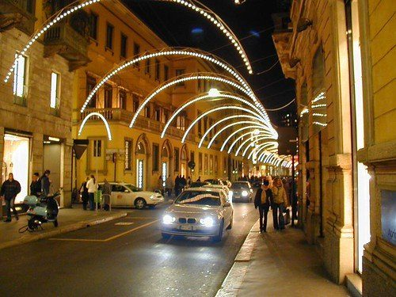
Ogni giorno, Yasha!
Il presente indicativo dei verbi regolari
The present tense of regular verbs
00Riscaldamento Warm-up · chapters 1–6
Yasha, scegli la parola giusta. Sono cose che conosci già!Choose the right word. You already know these!
Tocca una forma per ascoltarla · Tap a form to hear it
| -are lavorare | -ere prendere | -ire partire | -ire (-isc-) capire | |
|---|---|---|---|---|
| io | lavoro | prendo | parto | capisco |
| tu | lavori | prendi | parti | capisci |
| lui/lei/Lei | lavora | prende | parte | capisce |
| noi | lavoriamo | prendiamo | partiamo | capiamo |
| voi | lavorate | prendete | partite | capite |
| loro | lavorano | prendono | partono | capiscono |
io → -o · tu → -i · noi → -iamo in tutti i gruppi!
The endings for io, tu and noi are the same in all groups.
capire, costruire, dimagrire, finire, ingrandire, impedire, obbedire, preferire, pulire, unire
aprire, divertire, dormire, fuggire, offrire, partire, scoprire, seguire, sentire, servire, soffrire, vestire
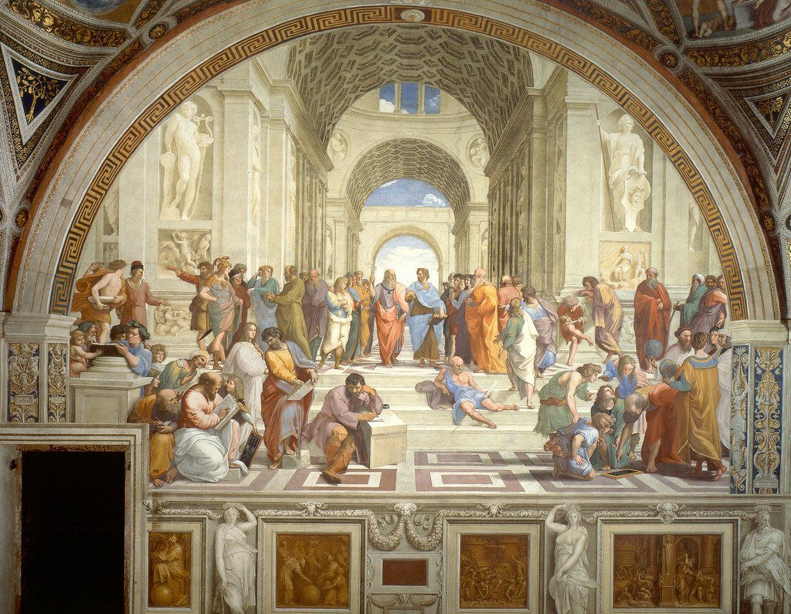
| giocare | pagare | cercare | |
|---|---|---|---|
| io | gioco | pago | cerco |
| tu | giochi | paghi | cerchi |
| lui/lei/Lei | gioca | paga | cerca |
| noi | giochiamo | paghiamo | cerchiamo |
| voi | giocate | pagate | cercate |
| loro | giocano | pagano | cercano |
Yasha, gira le carte: davanti c'è il verbo, dietro la traduzione e un esempio. Quando conosci una parola, clicca su «La so!».Flip the cards: the verb is on the front, the translation and an example on the back. When you know a word, click “La so!”.
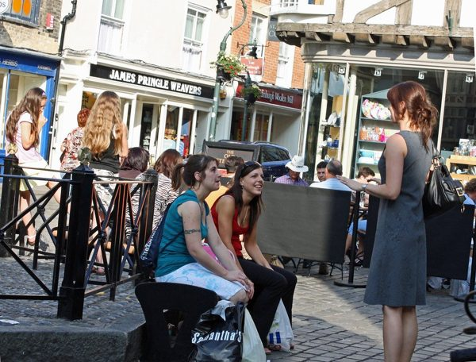
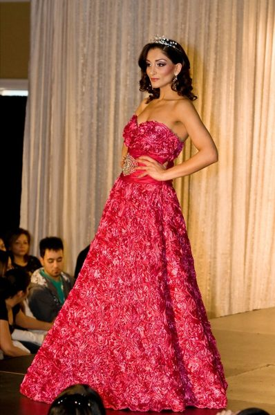
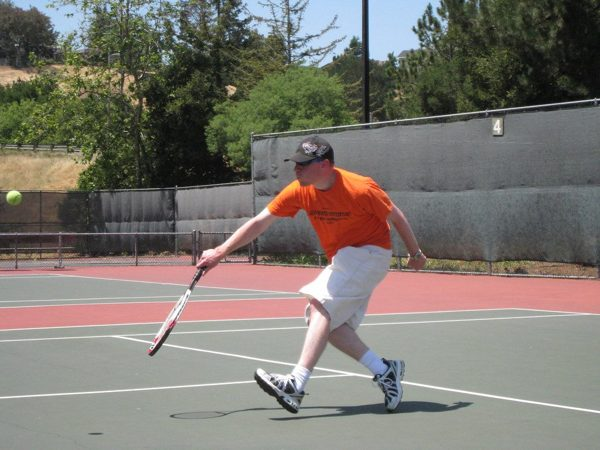
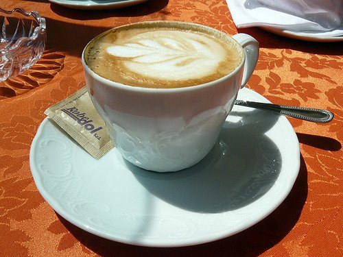
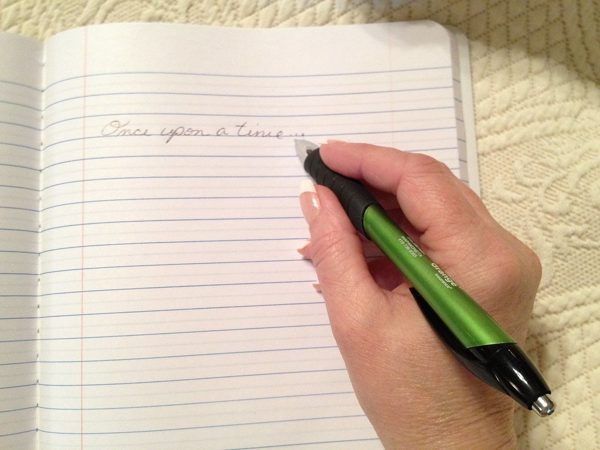
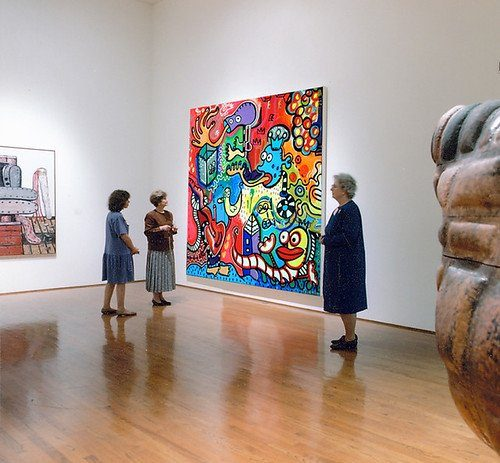
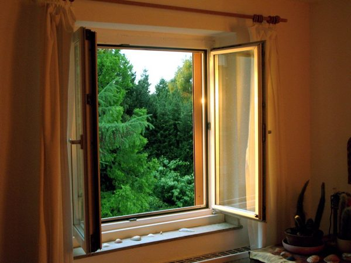
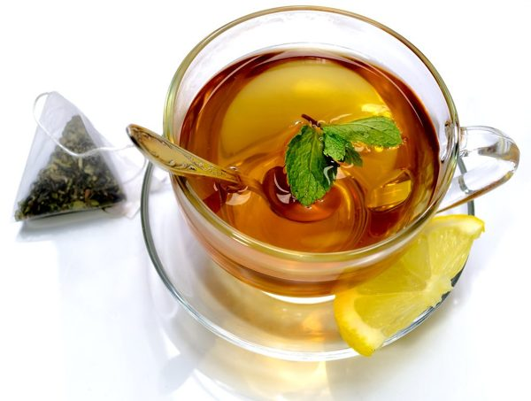
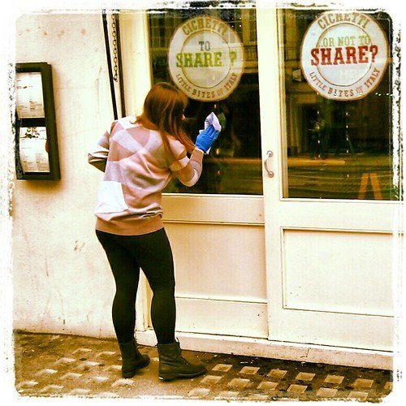
Yasha, leggi il testo, ascolta e rispondi alle domande.Read the text, listen and answer the questions.
FontinaMI: la Valle d'Aosta a tavola a MilanoFontinaMI: the Aosta Valley at the table in Milan
Dal 16 al 29 novembre 2026 dodici ristoranti di Milano partecipano a FontinaMI. È la sesta edizione di questo evento. Gli chef preparano piatti speciali con la Fontina DOP, un formaggio della Valle d'Aosta. Ci sono ristoranti stellati e locali storici della città. I clienti prenotano un tavolo e assaggiano i piatti nuovi. La fonduta, per esempio, è un classico della cucina valdostana.
Tocca una frase per ascoltarla · Tap a sentence to hear it
Traduzione · Translation
From 16 to 29 November 2026, twelve restaurants in Milan are taking part in FontinaMI. It is the sixth edition of this event. The chefs prepare special dishes with Fontina DOP, a cheese from the Aosta Valley. There are Michelin-starred restaurants and historic places in the city. Customers book a table and taste the new dishes. Fondue, for example, is a classic of Aosta Valley cooking.
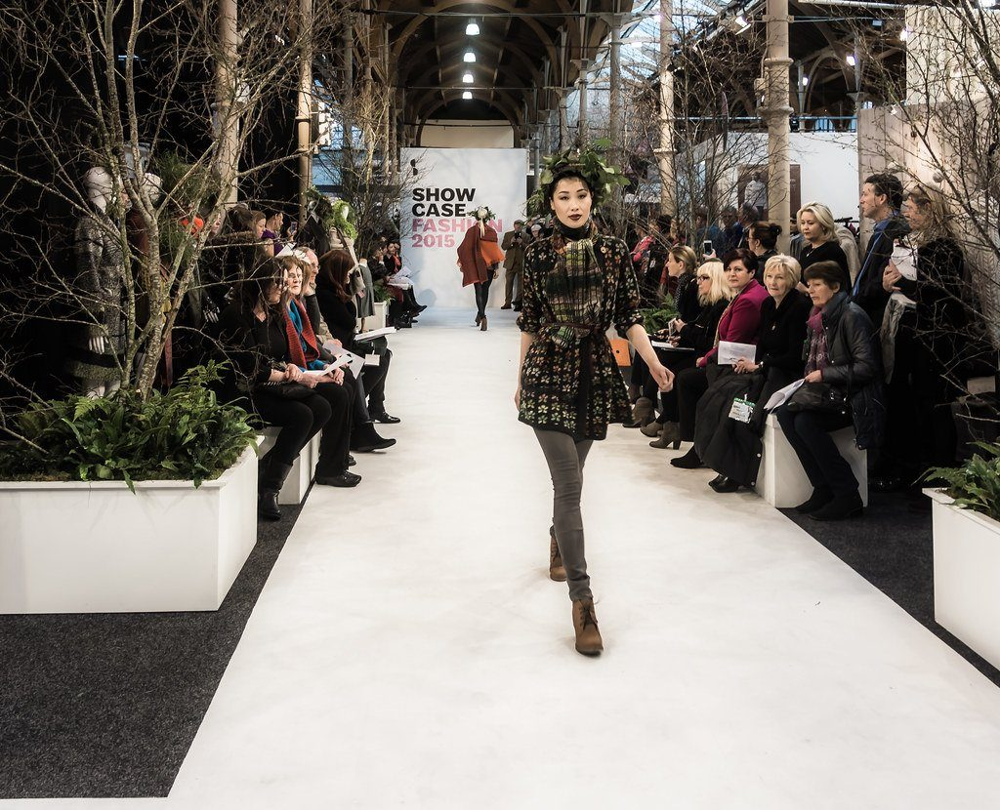
Viktor&Rolf a MilanoViktor&Rolf in Milan
Fino al 22 novembre 10 Corso Como, un famoso concept store di Milano, ospita «Spectrum», la prima mostra in Italia dedicata a Viktor&Rolf. Viktor e Rolf sono due stilisti olandesi. I visitatori guardano gli abiti, scoprono le idee dei due designer e scattano foto. A Milano la moda vive tutto l'anno: a settembre, durante la Fashion Week, la città ospita più di duecento appuntamenti. Nelle vie del centro le persone guardano le vetrine, comprano e parlano di stile.
Tocca una frase per ascoltarla · Tap a sentence to hear it
Traduzione · Translation
Until 22 November, 10 Corso Como, a famous concept store in Milan, is hosting “Spectrum”, the first exhibition in Italy dedicated to Viktor&Rolf. Viktor and Rolf are two Dutch fashion designers. Visitors look at the clothes, discover the two designers' ideas and take photos. In Milan, fashion lives all year round: in September, during Fashion Week, the city hosts more than two hundred events. In the streets of the centre, people look at shop windows, shop and talk about style.
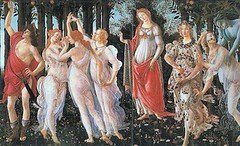
Yasha, ascolta le domande e rispondi a voce. Poi scrivi la tua risposta e impara a memoria!Listen to the questions and answer out loud. Then write your answer and learn it by heart!
06Da rivedere To review
Qui trovi le risposte sbagliate. Clicca sul link per rivedere la regola.Here are your wrong answers. Click the link to review the rule.